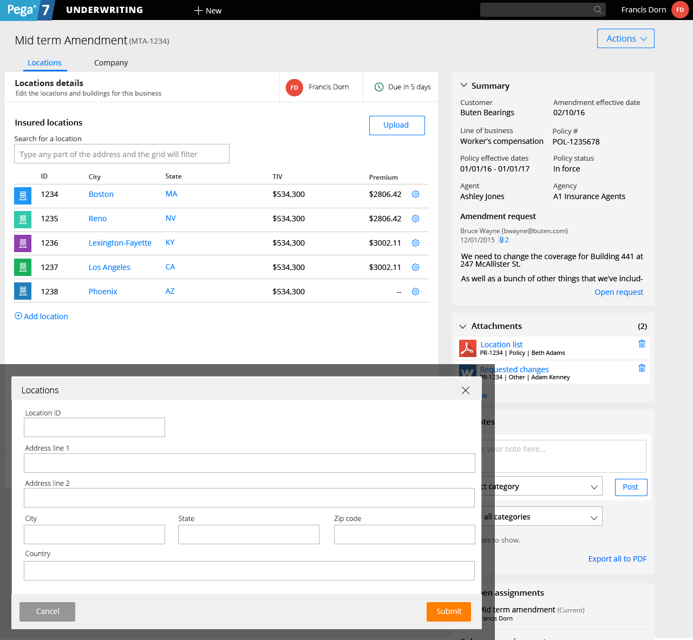
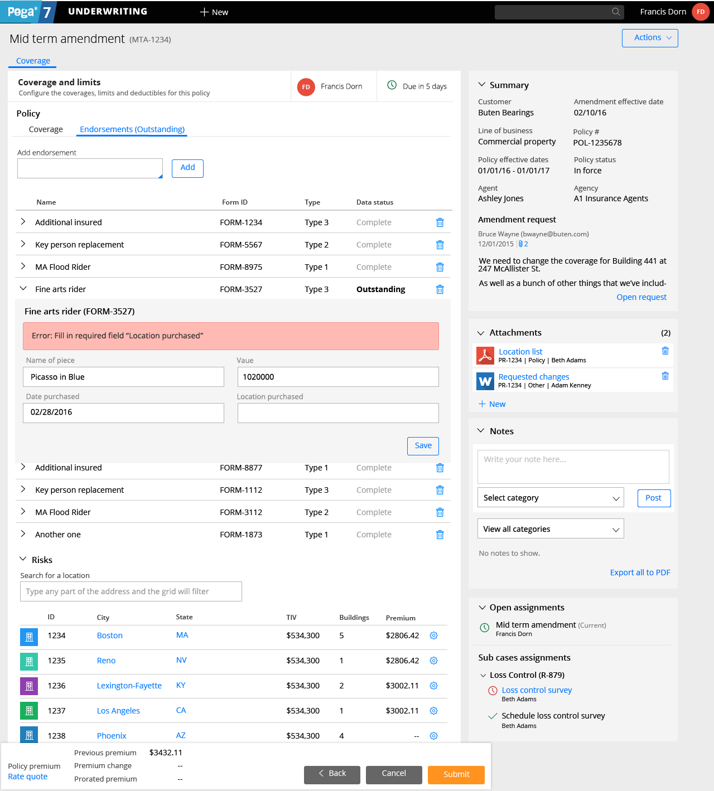

Pega Underwriting Redesign
Pega Underwriting for Insurance (PUI) is one of the products I’ve spent a lot of time on.
Recently, I led a full redesign of this application, to take it from a piece-meal app that was built in fits and starts with no overall vision, to a fully designed product. This project is still in development and design iteration, with phase 1 complete.
What is shown below is the "mid term amendment" process. In this, a company has requested a change to their commercial policy. They can potentially change any detail on their entire policy, which could be hundreds of pages long when printed. Designing this process meant taking a look at the application holistically and identifying and fixing usability issues that existed in the original policy set-up. This project was scoped by the development teams working on it as a 6-9 month project and it is being built in phases.
Check out the screenshots here, and if you're interested in more, watch the video below. A full overview of the design is at about 2min in.
(Created with Illustrator and Marvel)
On mobile? This unfortunately won't render well under 700px wide.
 